Task 6. Developing analytical reports
| 🌠This document is available in both English and Ukrainian. Use the language toggle in the top right corner to switch between versions. |
1. Goal
The goal of this task is to learn to develop reports in the Redash environment.
- In this task, you will learn to:
-
-
Model an analytics view.
-
Provide access to the analytics view.
-
Create three queries in Redash.
-
Create a dashboard in Redash.
-
Download the archive with the dashboard.
-
Unpack the archive in the regulations.
-
Apply the changes to the remote Gerrit repository.
-
Verify the report.
-
2. Task steps
2.1. Creating an analytical layer at the database level
The Redash analytical reporting system has access only to the replica of the database and exclusively to analytics views. To create these views, use the <ext:createAnalyticsView> tag, similar to creating search conditions.
|
For details on creating analytics views and search conditions at the data model level, see: |
| Create a separate createAnalyticsViews.xml file for analytics views using the createAnalyticsViews.xml template. |
The name of the analytics view must start with the report_ prefix.
|
2.1.1. Creating an analytics view for laboratory details
-
Analytics view name:
report_laboratory. -
Information is taken from the following tables:
laboratory,koatuu(region, town),ownership.
<changeSet author="registry owner" id="create report_laboratory view">
<ext:createAnalyticsView name="report_laboratory">
<ext:table name="laboratory" alias="l">
<ext:column name="laboratory_id"/>
<ext:column name="name"/>
<ext:column name="address"/>
<ext:column name="edrpou"/>
<ext:column name="koatuu_id"/>
<ext:column name="ownership_id"/>
</ext:table>
<ext:table name="koatuu" alias="k">
<ext:column name="name" alias="town"/>
<ext:column name="level1" alias="obl_code"/>
</ext:table>
<ext:table name="koatuu" alias="ko">
<ext:column name="koatuu_id" alias="region_id"/>
<ext:column name="name" alias="region"/>
</ext:table>
<ext:table name="ownership" alias="o">
<ext:column name="name" alias="ownership"/>
</ext:table>
<ext:join type="inner">
<ext:left alias="l">
<ext:column name="koatuu_id"/>
</ext:left>
<ext:right alias="k">
<ext:column name="koatuu_id"/>
</ext:right>
</ext:join>
<ext:join type="left">
<ext:left alias="ko">
<ext:column name="code"/>
</ext:left>
<ext:right alias="k">
<ext:column name="level1"/>
</ext:right>
</ext:join>
<ext:join type="inner">
<ext:left alias="l">
<ext:column name="ownership_id"/>
</ext:left>
<ext:right alias="o">
<ext:column name="ownership_id"/>
</ext:right>
</ext:join>
<ext:where>
<ext:condition tableAlias="ko" columnName="type" operator="eq" value="'О'"/>
</ext:where>
</ext:createAnalyticsView>
</changeSet>SELECT l.laboratory_id,
l.name,
l.address,
l.edrpou,
l.koatuu_id,
l.ownership_id,
k.name AS town,
k.level1 AS obl_code,
ko.koatuu_id AS region_id,
ko.name AS region,
o.name AS ownership
FROM laboratory l
JOIN koatuu k ON l.koatuu_id = k.koatuu_id
LEFT JOIN koatuu ko ON ko.code = k.level1
JOIN ownership o ON l.ownership_id = o.ownership_id
WHERE ko.type = 'О';2.1.2. Creating an analytics view for the territorial codes directory (KOATUU)
-
Analytics view name:
report_koatuu. -
Information is taken from the following table:
koatuu.
<changeSet author="registry owner" id="create report_koatuu view">
<ext:createAnalyticsView name="report_koatuu">
<ext:table name="koatuu">
<ext:column name="koatuu_id"/>
<ext:column name="code"/>
<ext:column name="name"/>
<ext:column name="type"/>
</ext:table>
</ext:createAnalyticsView>
</changeSet>SELECT koatuu.koatuu_id,
koatuu.code,
koatuu.name,
koatuu.type
FROM koatuu;2.1.3. Creating an analytics view for the ownership types directory
-
Analytics view name:
report_ownership. -
Information is taken from the following table:
ownership.
<changeSet author="registry owner" id="create report_ownership view">
<ext:createAnalyticsView name="report_ownership">
<ext:table name="ownership">
<ext:column name="ownership_id"/>
<ext:column name="name"/>
</ext:table>
</ext:createAnalyticsView>
</changeSet>SELECT ownership.ownership_id,
ownership.name
FROM ownership;2.2. Providing access to analytics views
Each role specified in the roles/officer.yml file in the registry Gerrit repository has a database user in the replica prefixed with analytics_ — for example, analytics_officer.
For the reports to work correctly, you must grant access to the analytics views for the corresponding role. Check the officer.yml file and add the officer role if it is not specified.
roles:
- name: officer
description: Officer roleProviding access rights on the Platform version 1.5 or later
In the createAnalyticsViews.xml file, add the <ext:grantAll> tag. Inside this tag, put the <ext:role> tag with the name="analytics_officer" attribute.
<changeSet author="registry owner" id="grants to all analytics users">
<ext:grantAll>
<ext:role name="analytics_officer"/>
</ext:grantAll>
</changeSet>Copy the createAnalyticsViews.xml file to the data-model folder of the Gerrit repository.
2.3. Applying changes to the database model
- To apply changes, perform the following steps:
-
-
In the main-liquibase.xml file, add the
<include>tag with thefile="data-model/createAnalyticsViews.xml"attribute at the end of the<databaseChangeLog>tag:<databaseChangeLog...> <include file="data-model/createAnalyticsViews.xml"/> </databaseChangeLog> -
Update the regulations version in the settings.yaml file in the root directory of the Gerrit repository.
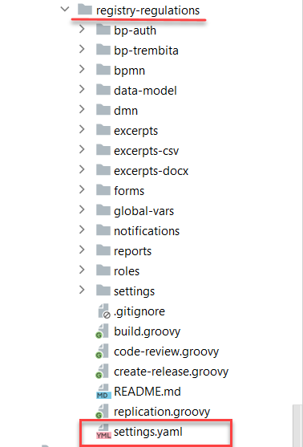
-
Apply changes to Gerrit (
git commit,git push). -
Perform a code review of your commit. If you don’t have the reviewer permissions, contact another reviewer.
-
Wait until the MASTER-Build-registry-regulations Jenkins pipeline completes successfully.
-
2.4. Creating a report in Redash
Analytical reporting is developed in the admin instance of Redash. To access it, you need to have the redash-admin role in the -admin realm of the registry. The role is assigned by the security administrator in the Keycloak service interface. For details on role management, see admin:user-management-auth/keycloak-create-users.adoc.
|
2.4.1. Creating a query for the ownership type parameter
In this step, you need to create a query for the parameter that will only show laboratories with a specific ownership type.
- First, create a Snippet (a default query):
-
-
In Redash, go to Settings.
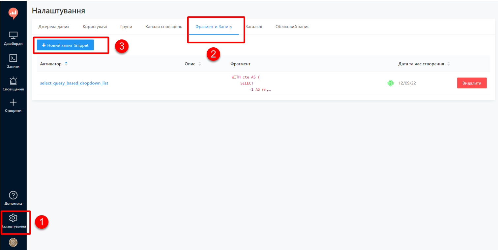
-
Open the Query Snippets tab, click the
New Snippetbutton, and fill out the required fields:-
Trigger: Enter
select_query_based_dropdown_list. -
Snippet: Enter the following SQL code:
SQL request templateWITH cte AS ( SELECT -1 AS rn, uuid_nil() AS value, '( All values )' AS name UNION ALL SELECT 2 AS rn, <OBJ_PK_UUID> AS value, name AS name FROM <OBJ_NAME> ) SELECT value, name FROM cte ORDER BY rn, name;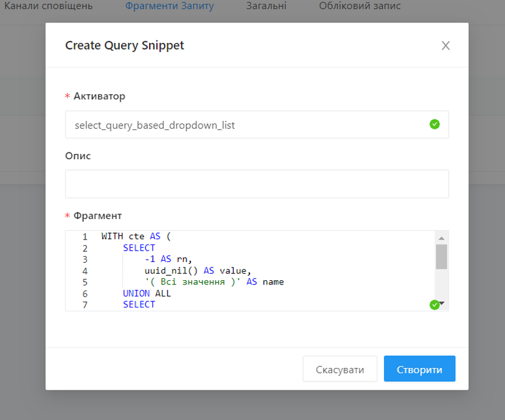
-
-
- Next, create a new query:
-
-
Go to the
redash-admininstance of Redash. -
Open the Queries section and click
New Query.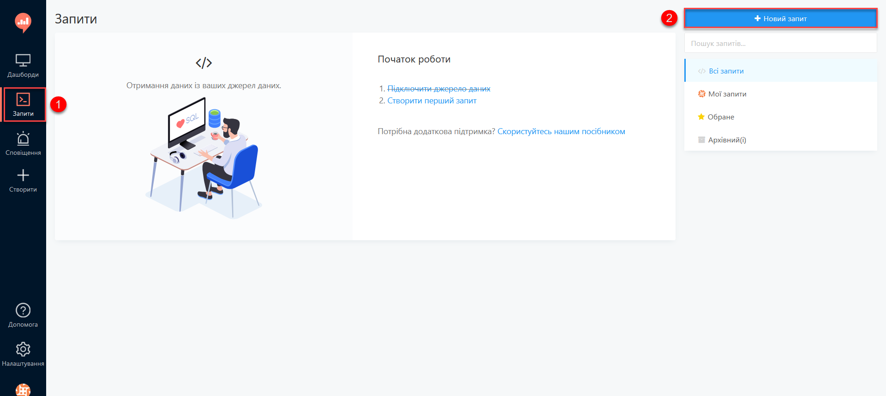
-
In the query box, type
select_, then select a request template for creating parameters in reports from the dropdown list:select_query_based_dropdown_list.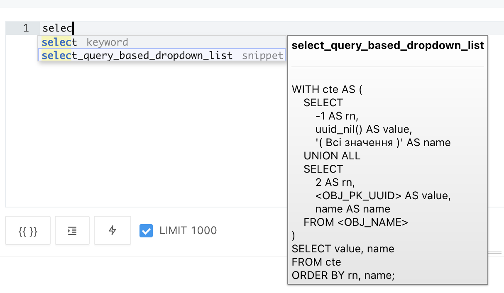
-
Change
<OBJ_PK_UUID>toownership_id, and<OBJ_NAME>toreport_ownership_v. The names must correspond to the ones defined during the Creating an analytical layer at the database level step of this task.The
report_ownershipis the analytics view created in the createAnalyticsViews.xml file during the Creating an analytical layer at the database level step.The system adds the
_vpostfix during the deployment. Always refer to all analytics views in Redash using the following pattern:analytics_view_name + _v.
Example 2. The name specified when creating the analytics view<ext:createAnalyticsView name="report_ownership">Example 3. The name generated during the deployment -
Click the
Executebutton to send the query to the database.The table with data is displayed below the query box.
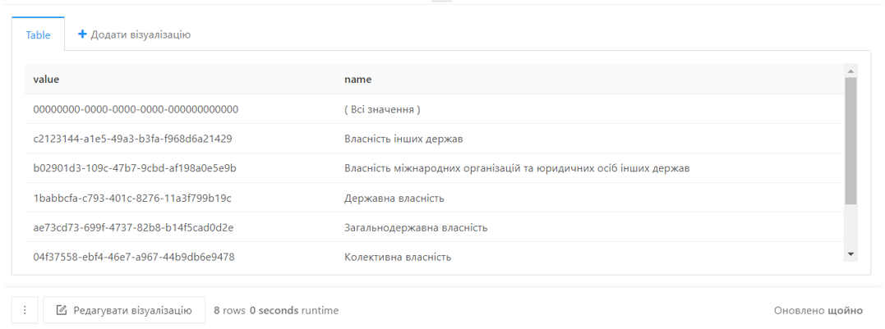
-
Select the query name at the top (by default, it’s
New Query) and provide a new name — for example,Select ownership type. Press Enter.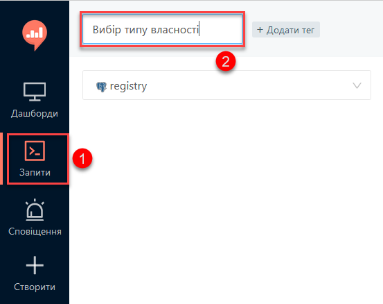
-
Click
Saveto save your query. -
Click
Publishto publish your query.
-
2.4.2. Creating a query for the region parameter
In this step, you need to create a query for the parameter that will only show laboratories from a specific region.
- Create a new query:
-
-
Go to the
redash-admininstance of Redash. -
Open the Queries section and click
New Query. -
In the query box, type
select_, then select a request template for creating parameters in reports from the dropdown list:select_query_based_dropdown_list. -
Change
<OBJ_PK_UUID>tokoatuu_id, and<OBJ_NAME>toreport_koatuu_v. Add aWHERE type = 'R'condition to limit the values to regions. -
Click the
Executebutton to send the query to the database.The table with data is displayed below the query box.
-
Select the query name at the top (by default, it’s
New Query) and provide a new name — for example,Select region. Press Enter.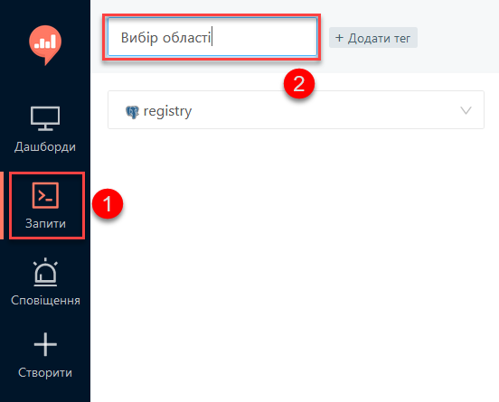
-
Click
Saveto save your query. -
Click
Publishto publish your query.
-
2.4.3. Creating the main report query
| The main query uses previous queries as filtering parameters. |
- Create a new query:
-
-
Go to the
redash-admininstance of Redash. -
Open the Queries section and click
New Query. -
In the query box, enter the following SQL script:
SQL query templateSELECT name AS "Laboratory name", edrpou AS "EDRPOU", address AS "Address", ownership AS "Ownership type", town AS "Town", region AS "Region" FROM report_laboratory_v WHERE region_id = ''
-
- Set the filtering by region option:
-
-
Put the cursor between the single quotes and click the
Add New Parameterbutton.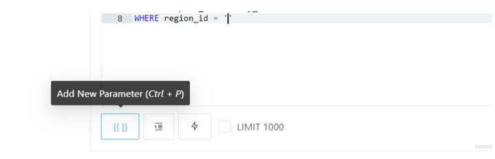
-
Fill out the form using the following values:
-
Keyword:
region -
Title:
Region -
Type:
Query Based Dropdown List -
Query:
Select region
-
-
Click the
Add Parameterbutton.You will get an expression like this:
… WHERE region_id = '{{ region }}'.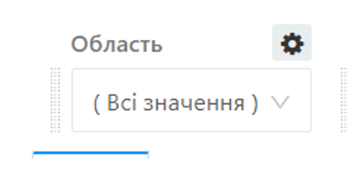Figure 1. Region selection dropdown (final view) -
To this filtering expression, add the
ORlogical operator and the following expression:'{{ region }}'= uuid_nil(). This handles the "All values" condition. -
Enclose the expressions to the left and right of the
ORoperator in parentheses.
-
- Set the filtering by ownership option:
-
-
In a new line, add the condition for filtering by the laboratory owner:
AND ownership_id = ''. -
Put the cursor between the single quotes and click the
Add New Parameterbutton. -
Fill out the form using the following values:
-
Keyword:
ownership -
Title:
Ownership -
Type:
Query Based Dropdown List -
Query:
Select ownership type
-
-
Click the
Add Parameterbutton.You will get an expression like this:
… AND ownership_id = '{{ ownership }}'.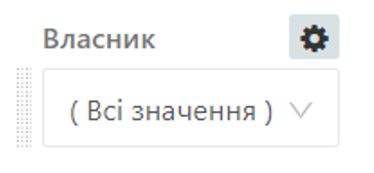Figure 2. Ownership selection dropdown (final view) -
To this filtering expression, add the
ORlogical operator and the following expression:'{{ ownership }}'= uuid_nil(). This handles the "All values" condition. -
Enclose the expressions to the left and right of the
ORoperator in parentheses.TheWHEREexpression you should get as a resultWHERE (region_id = '{{ region }}' OR '{{ region }}' = uuid_nil() ) AND (ownership_id = '{{ ownership }}' OR '{{ ownership }}' = uuid_nil()) -
Click the
Executebutton.The results table will contain the laboratories that were created earlier.
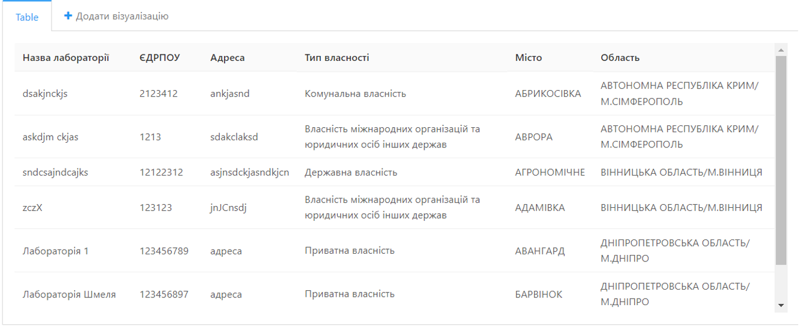
-
Select the query name at the top (by default, it’s
New Query) and provide a new name — for example,List of laboratories. Press Enter.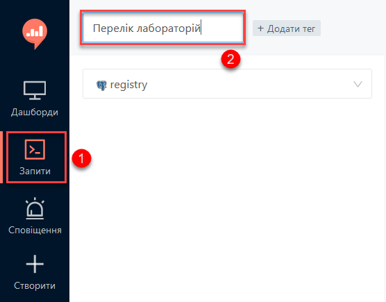
-
Click
Saveto save your query. -
Click
Publishto publish your query.
-
2.4.4. Creating a dashboard
- Create a dashboard:
-
-
Go to the
redash-admininstance of Redash. -
Open the Dashboards section and click
New dashboard.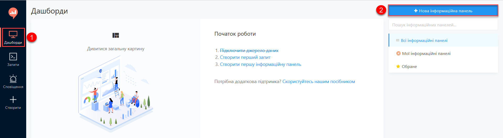
-
Specify the dashboard name:
Laboratories. -
Click the
Add Widgetbutton, select theList of laboratoriesquery from the list and click theAdd to Dashboardbutton. -
Resize the widget to fit the screen.
-
Click the
Done Editingbutton. -
Click the
Publishbutton to publish your dashboard.
-
|

2.4.5. Publishing the objects to users
Publish the objects you created in the regulations:
-
Sign in to the regulations administrator portal.
-
Open the Report templates section.
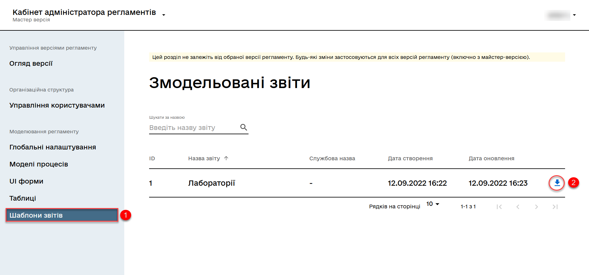
-
Click the download icon (
⤓) next to theLaboratoriesrecord. -
Unzip the archive and copy the files to the reports/officer folder of the Gerrit repository.
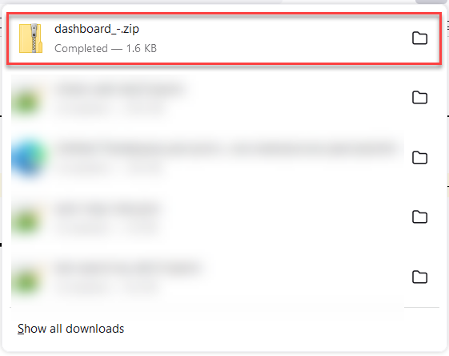
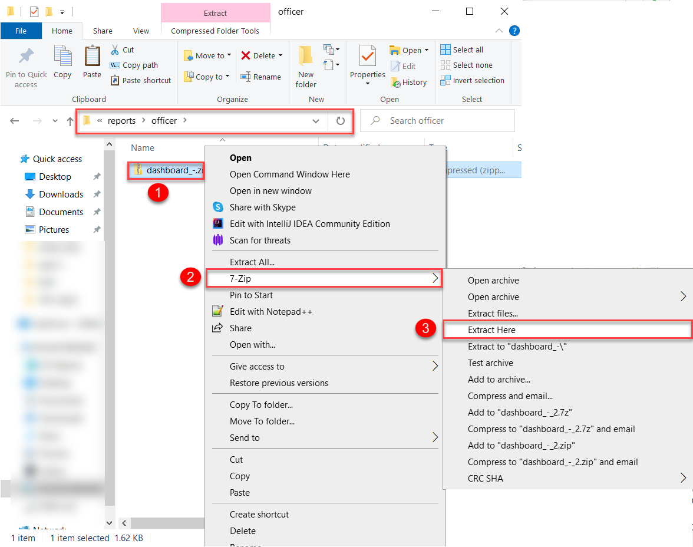
Dashboard files must have unique names — for example, dashboard_1.json, dashboard_2.json, dashboard_3.json, and so on.
The reports/<role-name>/queries/ folder must contain only one file named queries.json. This file must contain all the queries from the queries.json files from different archives. That is, you don’t overwrite one file with another but append new queries to the existing file. Here is an example of how this might look:
{ "count":172, "page_size":25, "page":1, "results":[ { "query information": 1 }, { "query information": 2 }, { "query information": 3 } ] }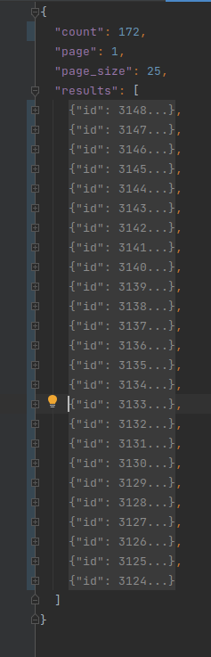Figure 3. A queries.json file with queries from different archivesDelete the .zip file from the reports/officer folder.
-
Apply changes to Gerrit (
git commit,git push). -
Perform a code review of your commit. If you don’t have the reviewer permissions, contact another reviewer.
-
Wait until the MASTER-Build-registry-regulations Jenkins pipeline completes successfully.
-
Check the dashboard you created in the viewer instance of Redash.
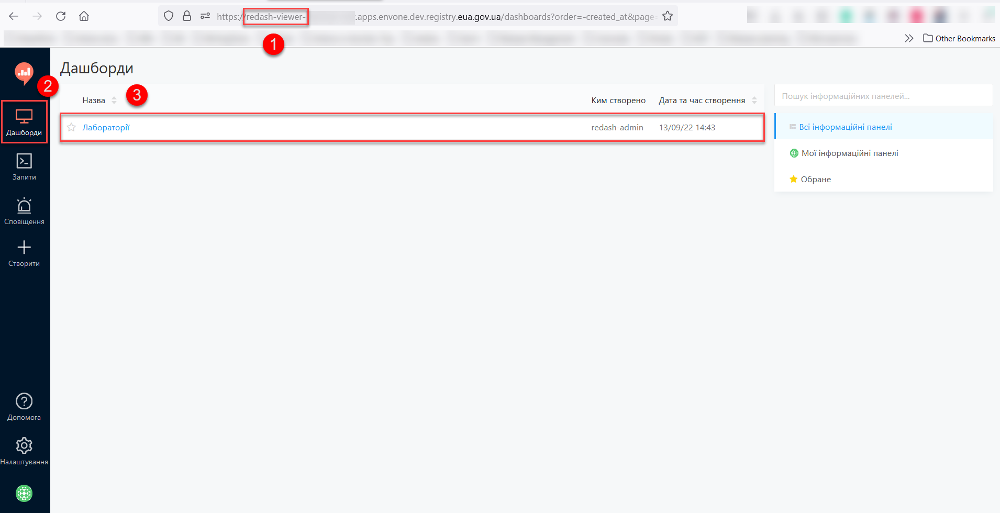
|
For details on data access and access control, see Managing analytics views. |